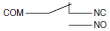

Basic Switches
|
|
Features |
| Principles | Classifications |
| Engineering Data |
|
| Explanation of Terms |
|
General Terms
(1) General Terms
Basic Switch
A small-size switch with a very small contact gap and snap-action mechanism and with a contact structure that switches by a specified movement and specified force enclosed in a case with an actuator provided on the exterior of the case. (Basic switches are often referred to as merely "switches" in this catalog.)
Switch with Contacts
A type of switch that achieves the switching function through the mechanical switching of contacts. Use as opposed to a semiconductor switch with switch characteristics.
Contact Form: The structure of the electrical I/O circuits of contacts used according to the type of application. (Refer to Contact Form table later in this section.)
Contact Form
The structure of the electrical I/O circuits of contacts used according to the type of application. (Refer to Contact Form table later in this section.)
Ratings
Value generally used as a reference for ensuring the characteristics and performance of switches, such as the rated current and rated voltage. Ratings are given assuming specific conditions (such as the type of load, current, voltage, and frequency).
Resin Filled (Molded Terminal)
A terminal which is filled with resin after being connected to the internal circuit of the switch with a lead to eliminate exposed current-carrying metal parts and thereby to enhance the drip-proof properties of the switch.
Insulation Resistance
The resistance between discontinuous terminals, between terminals and non-current-carrying metal parts, and between terminals and ground.
Dielectric Strength
The threshold value up to which insulation will not be destroyed when a high voltage is applied for 1 minute to a predetermined measurement location.
Contact Resistance
The electrical resistance of the contact point of contacts. Generally, the contact resistance includes the conductive resistance of the spring or terminal section.
Vibration Resistance
Malfunction: The range of vibration for which closed contacts will not open for longer than a specific time when vibration is applied to a switch currently in operation.
Shock Resistance
Destruction: The range of shock for which the components of the switch will not be damaged and for which operating characteristics are maintained when mechanical shock is applied to a switch during transportation or installation.
Malfunction: The range of shock for which closed contacts will not open for longer than a specific time when shock is applied to a switch currently in operation.
(2) Terms for Configuration and Structure
Switch Configuration and Structure

(3) Terms Related to Durability
Mechanical Durability
The switching durability when a switch is operated at a specified frequency and specified overtravel (OT) without the contacts energized.
Electrical Durability
The switching durability when a switch is operated at a specified frequency and specified overtravel (OT) under the rated load.
(4) Standard Test Conditions
Switches are tested under the following conditions.
Ambient temperature: 20 ± 2°C
Relative humidity: 65 ± 5%RH
Atmospheric pressure: 101.3 kPa
(5) N-level Reference Value
The N-level reference value indicates the failure rate of the switch.
The following formula indicates that the failure rate is 1/2,000,000 at
a reliability level of 60% (λ60).
λ60 = 0.5 × 10-6/operations
(6) Contact Shape and Type
| Shape | Type | Main material | Processing method | Main application |
| Crossbar contact | Gold alloy Silver alloy | Welding or riveting | Crossbar contacts are used for ensuring high contact reliability for switching micro loads. The moving contact and fixed contact come in contact with each other at a right angle. Crossbar contacts are made with materials that environment-resistant, such as gold alloy. In order to ensure excellent contact reliability, bifurcated crossbar contacts may be used. | |
| Needle | Silver | Needle contacts are used for ensuring improvement in contact reliability for switching loads, such as relays. A needle contact is made from a rivet contact by reducing the bending radius of the rivet contact to approximately 1 mm for the purpose of improving the contact pressure per unit area. | ||
| Rivet | Silver Silver plated Silver alloy Gold plated | Rivet contacts are used in a wide application range from standard to high-capacity loads. The fixed rivet contact is usually processed so that it has a groove to eliminate compounds that may be generated as a result of switching. Furthermore, to prevent the oxidation or sulfidization of the silver contacts while the switch is stored, the contacts may be gold-plated. Contacts made with silver alloy are used for switching high current, such as the current supplied to TV sets. |
(7) Contact Gap
The contact gap is either 0.25, 0.5, 1.0, or 1.8 mm. The contact gap is a design goal. Check the contact gap of the switch to be used if a minimum contact gap is required. The standard contact gap is 0.5 mm. Even for the same switch configuration, the smaller the contact gap of a switch mechanism is, the less the movement differential (MD) is and the more sensitivity and longer durability the switch has. Such a switch cannot ensure, however, excellent switching performance, vibration resistance, or shock resistance.
A switch becomes less sensitive when the movement differential (MD) increases along with the contact gap due to the wear and tear of the contacts as a result of current switching operations. If a switch with a contact gap of 0.25 mm is used for its high sensitivity, it will be necessary to minimize the switching current in order to prevent the wear and tear of the contacts as a result of current switching operations.
A switch with a wide contact gap excels in vibration resistance, shock resistance, and switching performance.
For information on the MD (movement differential), refer to the terms related to operating characteristics
| Character displayed | Contact gap | DC switching | Operating force and movement | Accuracy and durability | Vibration and shock resistance | Feature |
| H | 0.25 mm | △ | Minimal | ☆ | △ | High precision and long durability |
| G | 0.50 mm | ○ | Short | ◎ | ○ | General-purpose applications |
| F | 1.00 mm | ◎ | Medium | ○ | ◎ | Performance level between G and E |
| E | 1.80 mm | ☆ | Long | △ | ☆ | Highly vibration and shock resistive |
☆: Excellent ◎: Good ○: Ordinary △: Inferior
(8) Snap-action Mechanism
A snap-action mechanism is the mechanism by which the moving contact quickly moves from one fixed contact to another fixed contact with minimal relation to the speed at which the switch is operated. If the handle of a knife switch, for example, is moved quickly, the action is referred to as quick, but the mechanism by which the speed at which the handle is moved directly correlates to the movement speed of the contacts is referred to as slow-action movement rather than snap-action movement. The faster the contact switching speed, the shorter the connection time for arcing generated between the contacts.
As a result, contact wear and damage are reduced, and stable characteristics can be maintained. At this switching speed, however, in addition to mechanical limits, there is a limit to the speed that is effective to reduce arcing (i.e., economical speed). In particular, if the switching speed is too high when the circuit is open, the increased collision energy of the moving and fixed contacts will cause bouncing, and the arcing that is generated will produce marked wear on the contacts and contact welding may render the circuit unable to open. To perform this quick action, a spring mechanism is used. The spring mechanism generally uses a dead point, which is the critical action point when one condition changes in a springing manner to another condition.
The following figure shows an example of a snap-action mechanism that combines the pulling spring and the compression spring of a Basic Switch.
The following section provides a description of the operating principles of the snap-action mechanism for double-throw Z-series Switches
As shown in the following figure on the Switch force relationship, compression spring counterforce F1 is at equilibrium because of forces F2 and F0 at the free position where no external force is applied to the actuator. F0 is the force at which moving contact C is pushed to the other contact, fixed contact B.
Next, force is applied to a part of the pulling spring through the actuator, the pulling spring is displaced, forces F1 and F2 at point N progressively increase until the two angles together approach 180°, and eventually equilibrium is reached with only F1 and F2, i.e., F0 = 0.
Between the free point and the point where F0 = 0, a bending action works to move the contact horizontally, and the compression spring is even further bent.
From the position where F0 = 0, a minute displacement applied to the pulling spring because of external force produces a force in the opposite direction, F0, the strong force of the maximally bent compression spring sharply pushes moving spring C downward, and moving spring C transfers to the opposing fixed contact A by crossing open space.
Basic Switches use these operating principles to perform contact switching at a switching speed (i.e., opening speed) specific to the switch, regardless of the speed of the force with which the pulling spring is pushed. The position at which F0 = 0 is referred to as the operating position, which nearly corresponds with the position at which a part of the pulling spring passes through the dead point. The same operating principles apply if a releasing operation is performed when the external force is removed. The driving force, however, will be the opposing force of the bent spring.
Operating Principles of Basic Switches Using Pulling Spring and Compression Spring
(9) Contact Resistance vs. Contacting Force
The contact resistance depends on the contacting force. The following figure shows the relationship. The contacting resistance becomes stable (i.e., smaller) as the contacting strength increases.
Conversely, the contacting resistance becomes unstable (i.e., larger) as the contacting strength decreases.
Contact Resistance vs. Contacting Force
(10) Terms Related to Operating Characteristics
Definitions of Operating Characteristics
| Classifi- cation | Term | Abbre- viation | Unit | Disper- sion | Definition |
| Force | Operating Force | OF | N | Max. | The force applied to the actuator required to operate the switch contacts from the free position to the operating position. |
| Releasing Force | RF | N | Min. | The value to which the force on the actuator must be reduced to allow the contacts to return to the normal position. | |
| Total Travel Force | TTF | N | The force required for the actuator to reach the total travel position from the free position. | ||
| Travel | Pretravel | PT | mm or degrees | Max. | The distance or angle through which the actuator moves from the free position to the operating position. |
| Overtravel | OT | mm or degrees | Min. | The distance or angle of the actuator movement beyond the operating position to the total travel position. | |
| Movement Differential | MD | mm or degrees | Max. | The distance or angle of the actuator from the operating position to the releasing position. | |
| Total Travel | TT | mm or degrees | The distance or angle of the actuator movement from the free position to the total travel position. | ||
| Position | Free Position | FP | mm or degrees | Max. | The initial position of the actuator when no external force is applied. |
| Operating Position | OP | mm or degrees | ± | The position of the actuator at which the contacts snap to the operated contact position when external force is applied from the free position. | |
| Releasing Position | RP | mm or degrees | The position of the actuator at which the contacts snap from the operated contact position to their free position. | ||
| Total Travel Position | TTP | mm or degrees | The position of the actuator when it reaches the stopper. |
Example of Fluctuation:
Example: Z-15G-B with Operating Force of 2.45 to 3.43 N
The above means that each switch sample operates with a maximum operating force (OF) of 3.43 N when increasing the OF imposed on the actuator from 0.
(11) Force vs. Stroke vs. Contacting Force
The operating characteristics of Basic Switches are expressed in terms of force vs. stroke. The figure at the right shows this relationship. The stroke (i.e., actuator movement) is given on the horizontal axis and the force applied to the actuator is given on the vertical axis. The following describes the characteristics of Basic Switches.
1.The operating position (OP) and releasing position (RP) of the switch can be determined because the switch makes a switching sound as the force suddenly fluctuates when the switch operates and resets.
2.Movement differential makes Basic Switches suitable as detection switches in equipment because the moving contact is stable at either fixed contact even if the operating body that operates the actuator wobbles or moves up and down to some degree.
3.Quickly performing contact switching reduces arc connection time during current switching, which enables switching of large loads for a small switch.
The relation between the stroke and the operating force is shown in the figure above. The contacting force at the free position decreases as the actuator is pressed in, and reaches zero when it is pressed to the OP. The moving contact inverts from the normally closed (NC) side to the normally open (NO) side, and a contacting force is immediately produced. The NO-side contacting force increases when the actuator is further pressed in. When the actuator returns, a contacting force is produced on the NC side after the NO side becomes zero.
(12) Contact Switching Time
The figure at the right shows the relation between operating speed and contact switching time.
Contact switching time increases as the actuator operating speed decreases.
The contact switching time is therefore measured at the minimum operating speed. For the measurement circuit in the figure at the right, the applied current is 1 mA for microload Basic Switches and 100 mA for standard Basic Switches. As shown in the figure at the right, the contact switching time is the sum of the unstable time, reverse time, and bounce time, which is 5 to 15 ms for general Basic Switches. The unstable time here derives from the contact resistance instability due to contact wiping and the decrease in contacting force immediately before the contact reversal described above.
The reverse time derives from the mechanical reversing of the snap-action mechanism. Bounce time derives from the bouncing that occurs when the moving contact collides with the fixed contact. During the unstable time and bounce time, the contacts become heated, which causes contact welding and may result in incorrect operation of the electronic circuit for connections made with the electronic circuit. The Basic Switches are therefore designed to minimize unstable time and bounce time.
(13) Contact Wiping
Wiping may occur on the contacts or barely occur at all depending on the type of snap-action mechanism. Wiping is the action of the moving contact wiping the surface of the fixed contact based on the contacting force. The following figure illustrates wiping during operation and reset of the moving contact.
Wiping has the effect of removing contact welding caused by inrush current and cleaning the contact surfaces.
(14) Terminal Symbol and Contact Form
| Symbol | Terminal symbol |
| COM | Common terminal |
| NC | Normally closed terminal |
| NO | Normally open terminal |
(15) Terminal Types
| Type | Shape |
| Solder terminal |  |
| Quick-connect terminal (#110, #187, and #250) | |
| Screw terminal | |
| PCB terminal | |
| Angle terminal |
Note: In addition to the above, molded terminals with lead wires and snap-on mounting connectors are available.
(16) Contact Form
| Symbol | Name |
 | SPDT |
| SPST-NC | |
| SPST-NO | |
| Split contacts Z-10FY-B | |
| Maintained contacts Z-15ER | |
| DPDT DZ |
Terms Related to EN61058-1 Standards
Electric Shock Protective Class: Indicates the electric shock preventive level. The following classes are provided.
Class 0: Electric shocks are prevented by basic insulation only.
Class I: Electric shocks are prevented by basic insulation and grounding.
Class II: Electric shocks are prevented by double insulation or enforced insulation with no grounding required.
Class III: No countermeasures against electric shocks are required because the electric circuits in use operate in a low-enough voltage range (50 VAC max. or 70 VDC max.)
Proof Tracking Index (PTI): Indicates the index of tracking resistance, that is, the maximum dielectric strength with no short-circuiting between two electrodes attached to the switch sample while 50 drops of 0.1% ammonium chloride solution are dropped between the electrodes drop by drop. Five levels are provided. The following table indicates the relationship between these PTI levels and CTI values according to the UL Plastics Recognized Directory.
| PTI | CTI Classified by UL Yellow Book |
| 500 | PLC level 1: 400 ≤ CTI < 600 (Check with material manufacturer to see if the material meets CTI 500) |
| 375 | PLC level 2: 250 ≤ CTI < 400 (Check with material manufacturer to see if the material meets CTI 375) |
| 300 | PLC level 2: 250 ≤ CTI < 400 (Check with material manufacturer to see if the material meets CTI 300) |
| 250 | PLC level 2: 250 ≤ CTI < 400 |
| 175 | PLC level 3: 175 ≤ CTI < 250 |
Number of Operations: Indicates the operation number of durability test provided by the standard. They are classified into the following levels and the switch must bear the corresponding symbol. A switch with high switching frequency must withstand 50,000 switching operations and that with low switching frequency must withstand 10,000 operations to satisfy IEC standards.
| Number of operations | Symbol |
| 100,000 | 100,000 |
| 50,000 | 50,000 |
| 25,000 | 25,000 |
| 10,000 | No symbol required |
| 6,000 | 6,000 |
| 3,000 | 3,000 |
| 1,000 | 1,000 |
| 300 | 300 |
Ambient Operating Temperature: Indicates the operating temperature range of the switch. Refer to the following table for the meanings of the notation.
| Symbol | T85 | 25T85 |
| Temperature range | 0°C to 85°C | -25°C to 85°C |
Solder Terminal Type 1: A type of solder terminal classified by heat resistance under the following test conditions.
Dip soldering bath applied:
The terminal must not wobble or make any change in insulation distance after the terminal is dipped for a specified depth and period into a dip soldering bath at a temperature of 235°C at specified speed.
Soldering iron applied:
The terminal must not wobble or make any change in insulation distance after the terminal is soldered by applying wire solder that is 0.8 mm in diameter for two to three seconds by using a soldering iron, the tip temperature of which is 350°C.
Solder Terminal Type 2: A type of solder terminal classified by heat resistance under the following test conditions.
Dip soldering bath applied:
The terminal must not wobble or make any change in insulation distance after the terminal is dipped for a specified depth and period into a dip soldering bath at a temperature of 260°C at specified speed.
Soldering iron applied:
The terminal must not wobble or make any change in insulation distance after the terminal is soldered by applying wire solder that is 0.8 mm in diameter for 5 seconds by using a soldering iron, the tip temperature of which is 350°C.
Clearance distance: The minimum space distance between two charged parts or between a charged part and a metal foil stuck to the non-metal switch housing.
Creepage distance: The minimum distance on the surface of the insulator between two charged parts or between a charged part and a metal foil stuck to the non-metal switch housing.
Distance through insulation: The minimum direct distance between the charged part and a metal foil stuck to the isolative switch housing through air plus any other insulator thickness including the housing itself. The distance through insulation will be the insulator thickness when there is no distance through air.